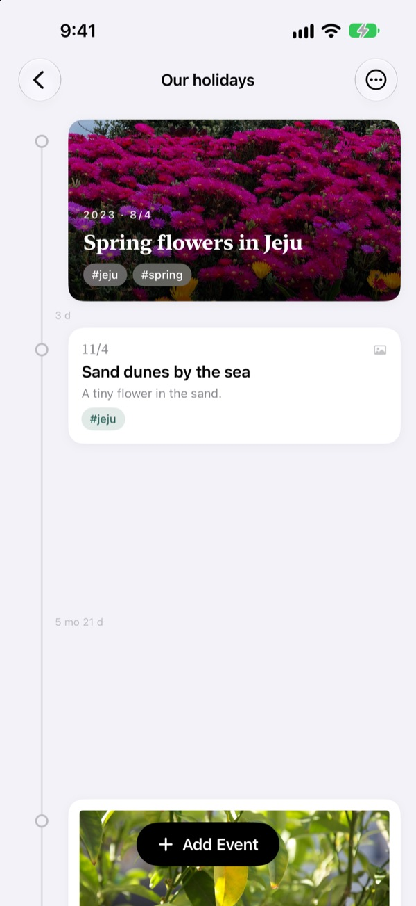
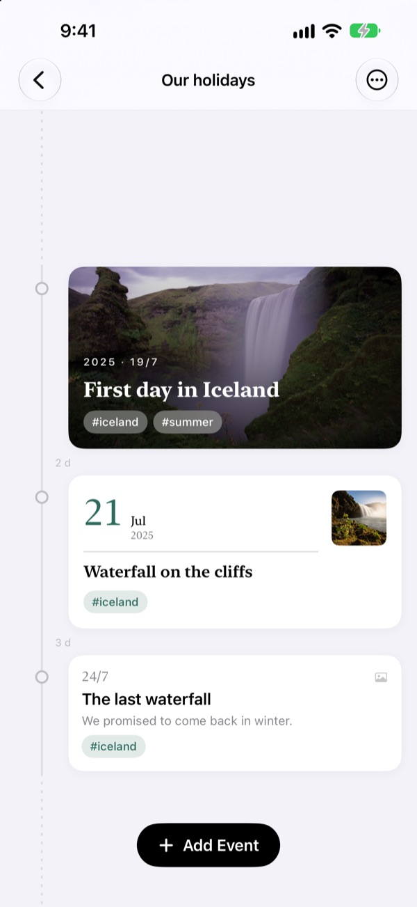
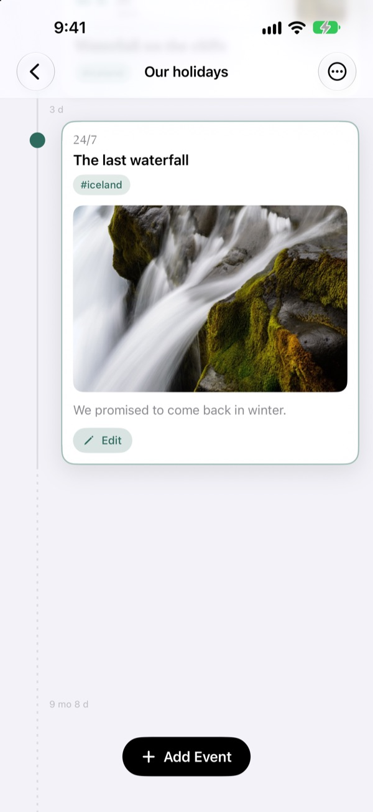
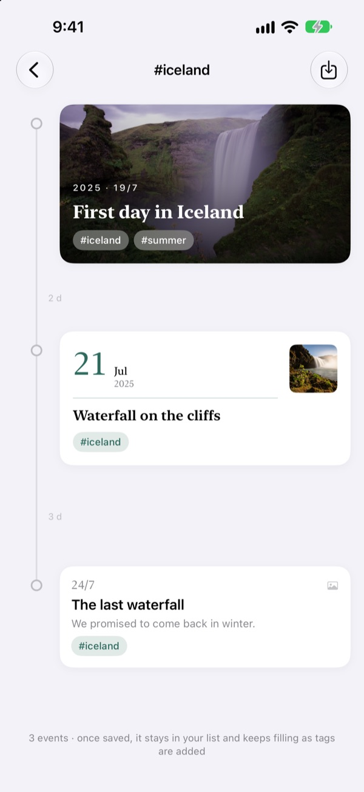
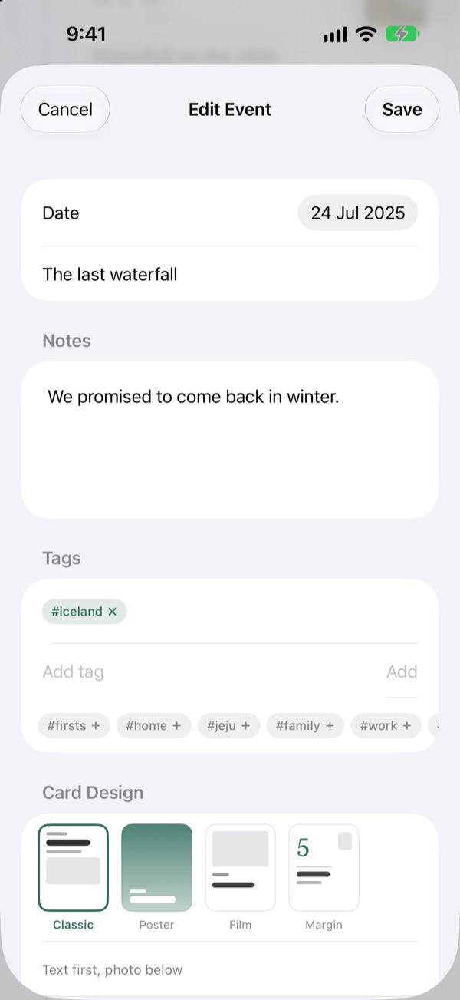

A timeline that
stretches with time
Three days and five days sit 3:5 apart. A long stretch like two years and four months folds into a dotted line. The spacing alone tells you how time really went.
Every feature is free. For iPhone and iPad.

Stretch the gaps yourself
Each button adds a new event after the last one. The spacing follows the same rule the app uses.
Scrolling your photos doesn't show you time
Your photo library lines everything up by date, but three days and two years each take up the same single step. Yeoul spaces events by the time between them, so you can see at a glance which stretches were packed and which were quiet.
The gap is the time
One scale runs through the whole timeline, so the same stretch of time is the same length anywhere on screen. Every gap is labelled with the real span, like 3 d or 5 mo 21 d.
Events that are very close still get a little room, and very long gaps fold into a dotted line.

It finds the photos from that day
Set the event's date and tap Find related photos to see what you shot that day. Nothing right? Tap Browse and pick one yourself.
Tap an event on the timeline and its photo and story open right where it sits.

One tag gathers scattered moments
Tag events with something like #Iceland, tap the tag, and every event with it, from every timeline, comes together in a new one.
Save it and it stays in your list, picking up new events as you tag them.

A card that suits each moment
Classic puts the words first. Poster fills the card with your photo. Film frames it like a print. Margin lets a big date take the stage. The preview changes the moment you pick one.

Three steps to start
- 1
Make a timeline
A baby's first year, a relationship, a trip. Give each one a name and a colour.
- 2
Add events
Write a date and a title, then add a photo from that day.
- 3
Tag them
Events with the same tag come together across timelines.
Four card designs
- Classic
- The words come first, with the photo below.
- Poster
- The photo fills the card and a big title sits on top. No photo? It fills with the timeline's colour.
- Film
- A photo framed like a print, with typewriter text and a date stamp.
- Margin
- A big date number takes the stage and the photo stays small. The words are the star.
A new event starts with the same design as the latest card in that timeline.
Every feature is free
Free
- As many timelines as you like, each with a name and colour
- Photos, stories and tags on every event
- Find photos from the event's day
- Saved tag timelines
- Four card designs
- iCloud sync between iPhone and iPad
- Log events with Shortcuts and Siri
Support the developer
- Pick a small, medium or large tip
- It doesn't unlock anything. It's simply a way to say thanks
Find it in Settings, whenever you feel like it.
No ads, no subscription.
Questions
Why are the gaps between events all different?
Yeoul spaces events by the time that really passed between them. Every gap uses the same scale, so three days and five days sit 3:5 apart. Events that are very close still get a minimum gap so they don't overlap, and very long gaps fold into a dotted line labelled with the real span, like 2 yr 4 mo.
I can't see the photos from that day.
Finding photos by date needs access to your library. Go to Settings > Yeoul > Photos and allow access. Yeoul looks for photos taken from midnight to midnight on that day, in your device's time zone. If you'd rather not grant access, tap Browse just below and pick from your library.
What is a tag timeline?
Tap a tag on any event and Yeoul gathers every event with that tag, from all your timelines, into one. Save the ones you check often and they stay in your list. Nothing is copied: edit the original event and the change shows up here too, and deleting a tag timeline leaves the events where they were.
Why can't I add events to a tag timeline?
A tag timeline is a view gathered by tag, not a container, so there's no way to tell which timeline a new event belongs to. Add the event to its own timeline, give it the tag, and it shows up here on its own.
Can I log something without opening the app?
Yes. Use Log an Event in the Shortcuts app or with Siri and just pick a timeline and a title. If you don't set a date, it's saved with the current time.
Can I see my timelines on my other devices?
Yes, on any iPhone or iPad signed in to iCloud with the same Apple Account. Check that iCloud is on in Settings > Apple Account > iCloud. Depending on your connection, changes can take a moment to arrive.
How do I delete my records?
Swipe a timeline to the left in the list, or tap Edit. Deleting a timeline deletes the events in it too. To clear what's left in iCloud, go to Settings > Apple Account > iCloud > Manage Storage.
Does the developer see my records?
No. Your records and photos are stored only on your devices and in your own iCloud, and the developer can't see them. The privacy policy below has the details.
How do I report a bug or suggest a feature?
You can send it straight from Settings in the app, or by email or Instagram at @lee25_ios. Including your device model, iOS version and what happened helps us sort it out faster.
Questions or feedback? Drop us a line at leeo@kakao.com.